第1位
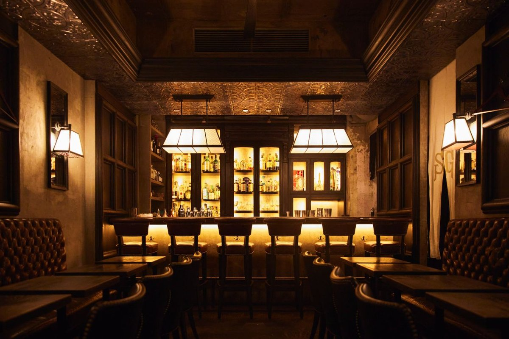
The SG Club
後閑信吾氏が手がけるフロア別コンセプトの複合型バー。1F「Guzzle」はカジュアル、地下「Sip」は本格派。World's 50 Best Bars 2020 第10位。
Googleマップで見る本ページにはプロモーションが含まれます
SHIBUYA BAR GUIDE
渋谷エリアのバーの中から、Google口コミの評価と件数をもとに、おすすめ順に20軒を厳選して紹介します。世界的に知られる名店から、のんべい横丁の小さな隠れ家、40階のスカイバーまで、渋谷の夜を楽しむための一軒が見つかります。順位は編集部のおすすめ順で、評価・口コミ数は2026年11月20日時点のGoogle口コミに基づきます。

後閑信吾氏が手がけるフロア別コンセプトの複合型バー。1F「Guzzle」はカジュアル、地下「Sip」は本格派。World's 50 Best Bars 2020 第10位。
Googleマップで見る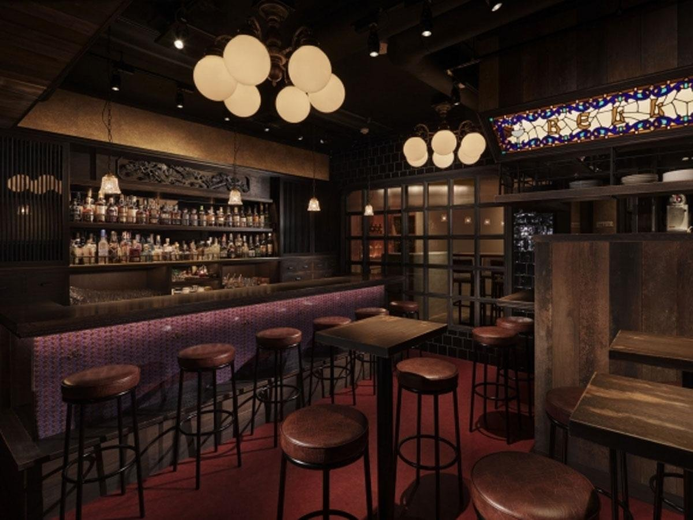
鈴木敦氏のバー。大正期の喫茶文化がモチーフで、懐石の構成をカクテルに置き換えた「COCKTAIL KAISEKI」が看板。World's 50 Best Bars 2025 第48位。
Googleマップで見る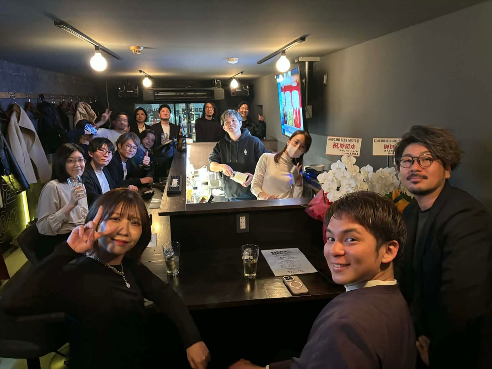
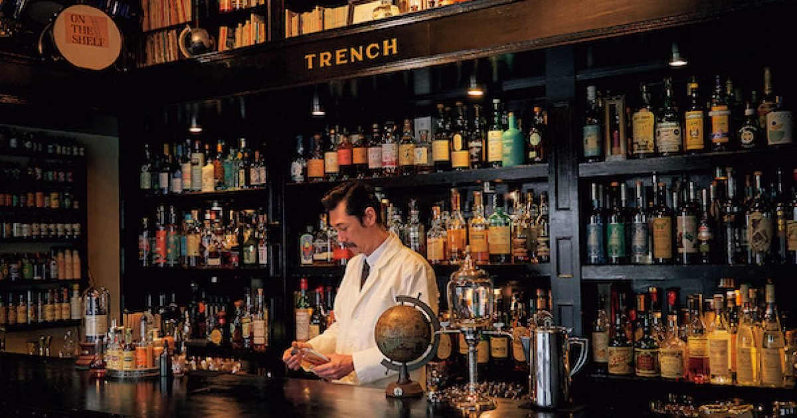
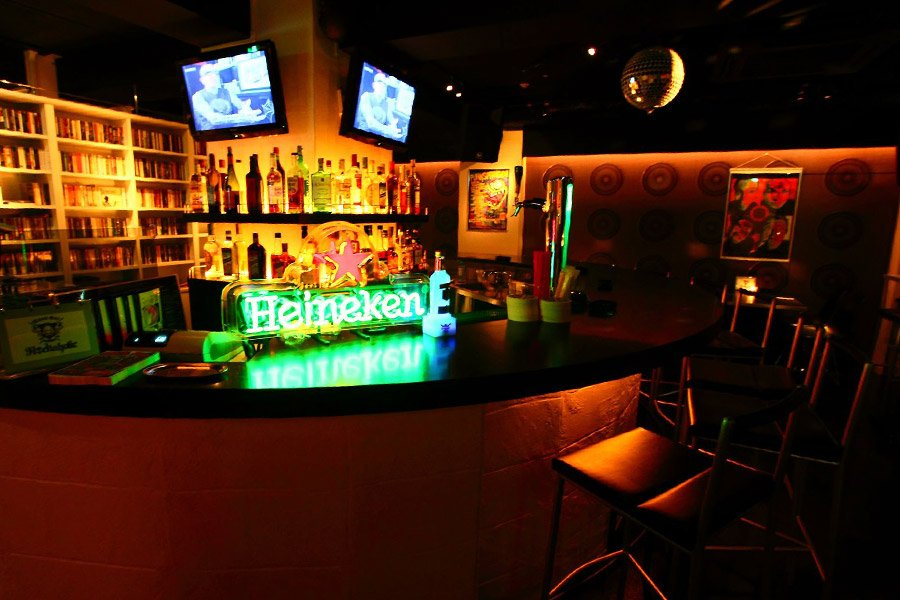
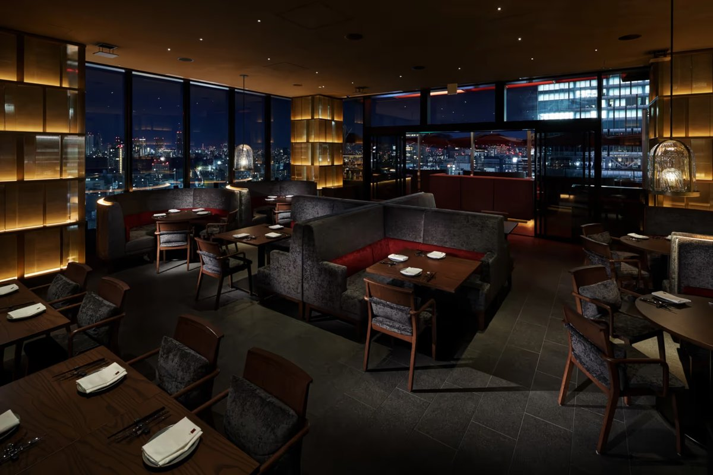
渋谷を見下ろすルーフトップのスカイバー。モダンアジアンの料理とカクテルを開放感のある空間で。※2027年1〜3月は改装休業予定
Googleマップで見る
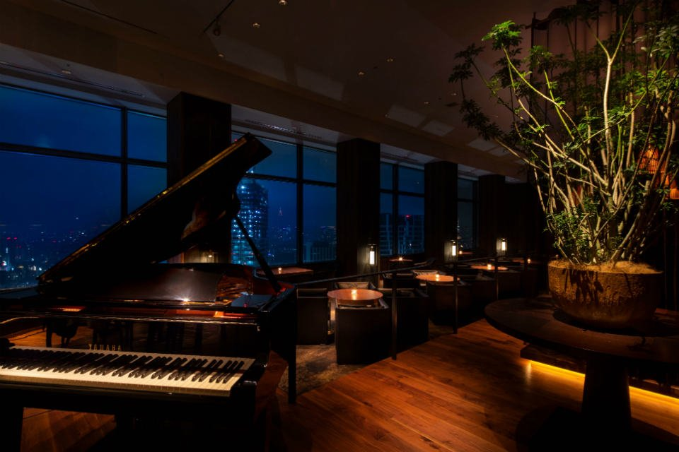

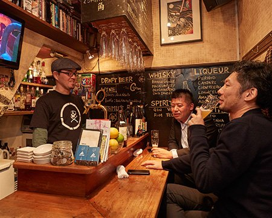

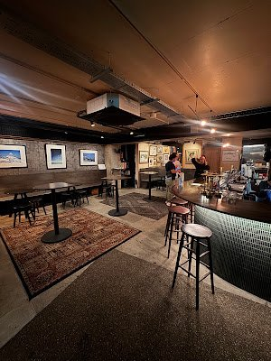
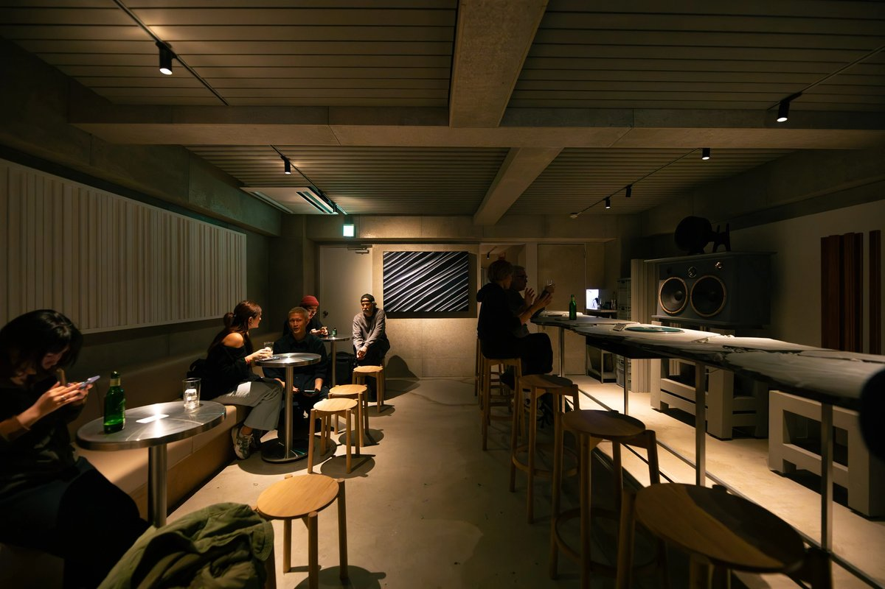

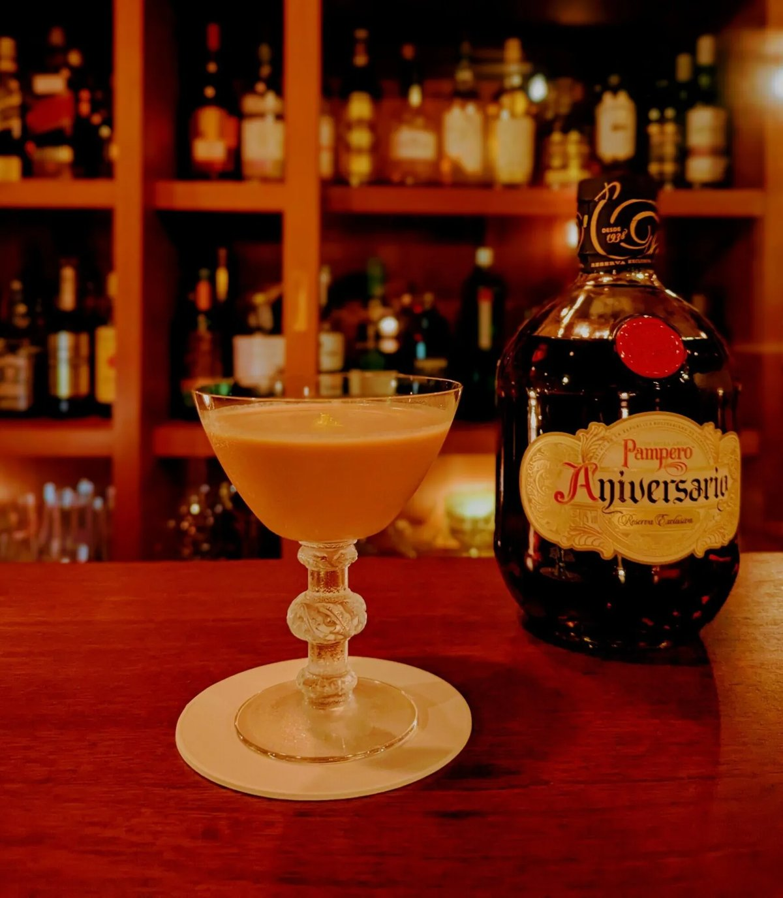
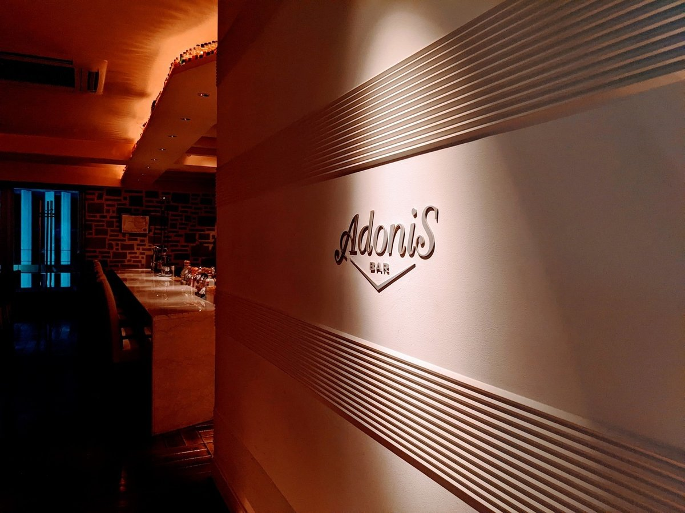
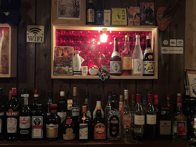

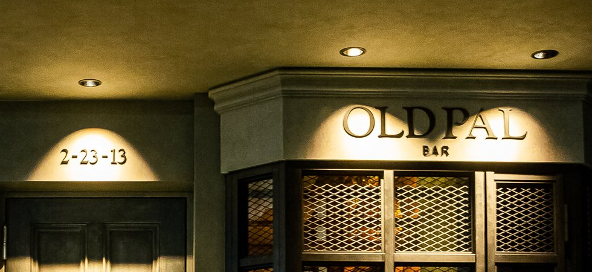
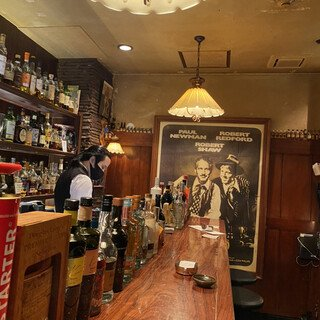
| 順位 | 店名 | エリア | Google評価 | 営業時間 |
|---|---|---|---|---|
| 1 | The SG Club | 神南 | ★4.5（1,542件） | 1F・B1 18:00〜翌1:00（火〜日、第4月曜定休） |
| 2 | The Bellwood | 宇田川町 | ★4.6（630件） | 18:00〜翌2:00（無休） |
| 3 | Bar 石の華 | 渋谷3丁目 | ★4.5（384件） | 17:00〜24:00（水・木・祝定休） |
| 4 | Bar TRENCH | 恵比寿西 | ★4.7（919件） | 18:00〜翌2:00（無休） |
| 5 | MUSIC BAR ROCKAHOLIC Shibuya | 宇田川町 | ★4.8（1,340件） | 19:00〜翌4:00（年中無休） |
| 6 | CE LA VI RESTAURANT & SKY BAR | 道玄坂・東急プラザ渋谷17F&18F | ★4.4（3,885件） | 11:00〜23:00（金・土は24:00まで） |
| 7 | Grandfather's bar | 渋谷1丁目・宮益坂 | ★4.6（486件） | 17:00〜翌2:00（月曜定休） |
| 8 | タワーズバー ベロビスト | 桜丘町・セルリアンタワー東急ホテル40F | ★4.4（445件） | 月〜金16:00〜24:00／土13:30〜24:00／日・祝13:30〜23:00 |
| 9 | BAR Legacy | 渋谷3丁目 | ★4.8（257件） | 火〜土18:00〜24:00／日18:00〜23:00（月・祝休） |
| 10 | TIGHT | 渋谷1丁目・のんべい横丁 | ★4.8（250件） | 月〜土19:00〜翌2:00（日曜定休） |
| 11 | Swig | 渋谷1丁目 | ★4.8（185件） | 火〜土19:00〜翌1:00 |
| 12 | PASS | 渋谷3丁目 | ★4.9（173件） | 火〜日18:00〜24:00（月曜定休） |
| 13 | Cidernaut | 奥渋・神山町 | ★4.6（221件） | 12:00〜23:00（水・木定休） |
| 14 | the bar Louise Francoise | 道玄坂 | ★4.9（109件） | 平日18:00〜／土日祝16:00〜（最終入店23:30、不定休） |
| 15 | Bar AdoniS | 道玄坂 | ★4.5（110件） | 18:00〜翌1:00（不定休） |
| 16 | Bar Baron Shibuya | 道玄坂 | ★4.5（109件） | 19:00〜翌5:00 |
| 17 | Bar Q | 道玄坂 | ★4.8（102件） | 19:00〜翌4:00 |
| 18 | BAR OLD PAL | 道玄坂 | ★4.9（57件） | 15:00〜24:00（月曜定休） |
| 19 | BAR NANZUKA TAKEN | 渋谷2丁目・渋谷アクシュ2F | ★4.8（50件） | 18:00〜翌2:00（日曜定休） |
| 20 | 八月の鯨 | 宇田川町 | ★3.5（745件） | 18:00〜翌4:00（不定休） |